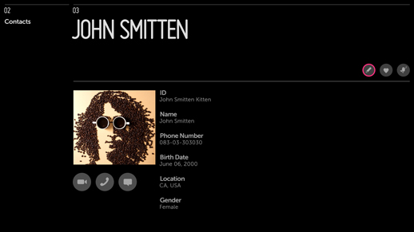
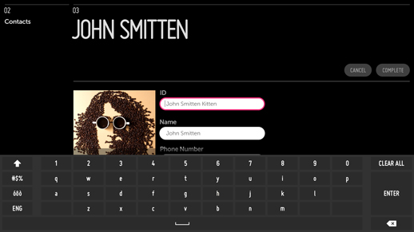
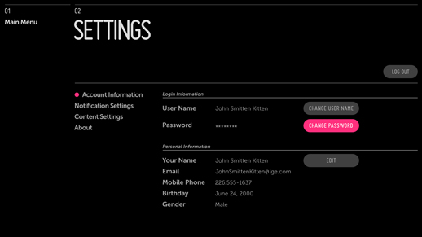
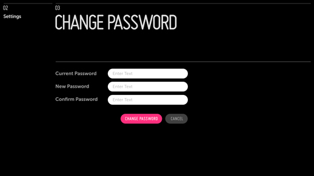

Edit Mode
Problem
The user needs to edit details such as account information.
Solution
While text input should generally be avoided on the TV, there are certain cases where a user must correct or update information (e.g., Contact Information or Account Information). For such cases, we provide two editing patterns: Inline Editing and New Panel Editing.
Inline Editing should be used only when the editing is not the primary use of the panel. For example, a Contact Details panel is primarily used for viewing a contact’s information and initiating a video, voice, or instant message conversation with that person. Occasionally, this information needs to be edited. In this case, use a button in the Action Bar to invoke Edit Mode.
New Panel Editing should be used when editing is the panel’s primary purpose. For example, a user typically visits an Account Details panel only when this information needs to be changed. Since account information can often be divided into multiple sections (e.g., User Info, Personal Info, Billing Info, Shipping Info), a sectioned detailed page is the best way to present this information. This approach also allows for an Edit button to be placed within each section. Selecting one of these Edit buttons will open a new panel for editing the current section only.
How to Use
Inline Editing
Add an Edit action button to the Action Bar.
Clicking Edit should put the current panel into Edit Mode:
- The subheader or sub-subheader provides onscreen direction.
- The buttons in the Action Bar are replaced with confirmation buttons.
- Text fields turn into input fields. (See User Input Patterns.)
- Images receive edit options such as Delete, Upload, etc.
(Note that clicking Edit should not open a new panel.)
Once in Edit Mode, the first editable item should receive focus. If this is an input field, the keyboard will automatically open.
Once the edits are complete, the user may confirm or cancel the changes. Then Edit Mode will be disabled, the confirmation buttons in the Action Bar should be dismissed, and the action buttons should return.
A confirmation message should be provided in the subheader or as a popup at the bottom of the screen.
Example

In this example, the current panel is in a non-editable state. This state is consistent with the main use case for the panel–viewing contact information and initiating a video, voice, or instant message conversation with the contact.
An Edit action button is provided in the Action Bar to enable inline editing.

Here the Edit action button has been selected and the panel is now in Edit Mode. Editable text fields have been changed to input fields and the contact image now has a button for changing the picture.
All of the action buttons in the Action Bar have been replaced with confirmation buttons, and the subheader provides onscreen direction.
New Panel Editing
Place an Edit button in the section to be edited.
Clicking the Edit button should open a new panel containing only the information from that section.
- The subheader or sub-subheader provides on screen direction.
- The buttons are removed from the Action Bar.
- Editable text fields turn into input fields. (See User Input Patterns.)
- Images receive edit options such as Delete, Upload, etc.
- Confirmation buttons appear at the end of the form. (See User Input Patterns.)
(Note: Do not open a new panel unless the user explicitly clicks the Edit button.)
When entering the panel, the first editable item should receive focus. If this is an input field, the keyboard will automatically open.
Once the edits are complete, the user may confirm or cancel the changes. Then the Edit panel closes and focus returns to the Edit buttons on the previous panel.
A confirmation message should be provided in the subheader or as a popup at the bottom of the screen.
Example

In this example, the current panel is in a non-editable state. The account information is divided into sections, each with its own Edit button.
Selecting any one of these Edit buttons will open a new panel containing only the information from that section.

Here a new panel has been opened for editing the information from the previously selected section.
All editable text fields have turned into input fields, the subheader provides onscreen direction, and the confirmation buttons are at the bottom of the form.
What to Avoid
Do not make Edit Mode the default state of a panel unless editing data is the panel’s primary use case.
Related Topics
Patterns: User Input, Notifications
Controls: Text Input, Button, Header/List Actions